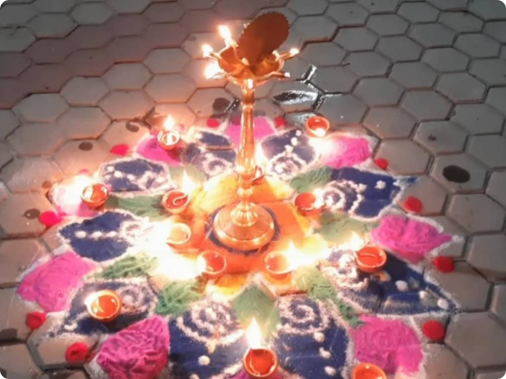
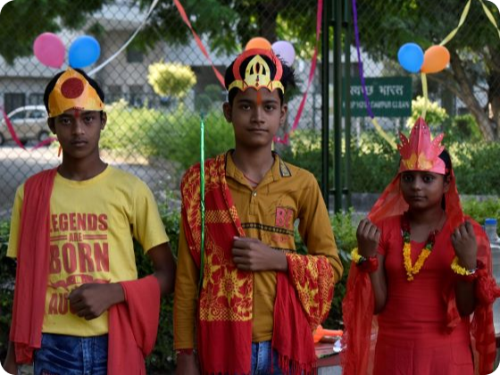
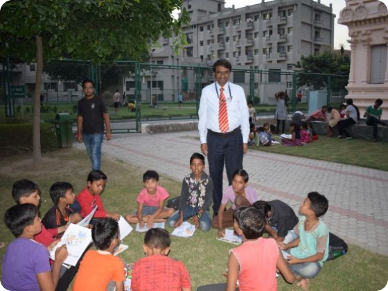
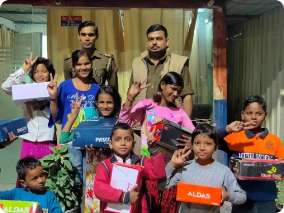
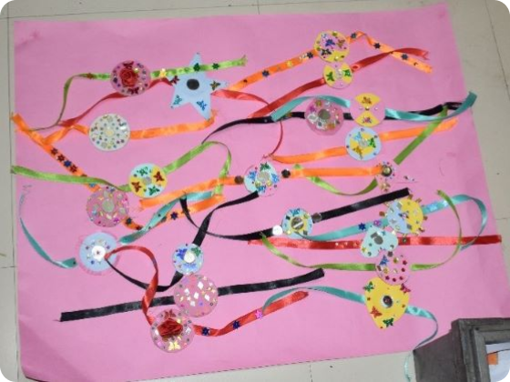
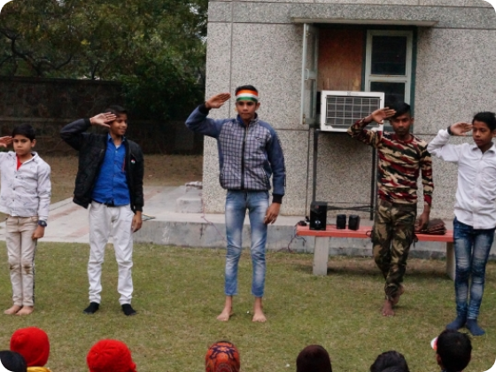

दीवाली, रोशनी का त्योहार है हम अक्षरज्ञान सदस्य इसे अपने छात्रों के साथ भी मनाते हैं। यह स्पीच से शुरू होता है, जिस पर बाद में, लगातार प्रश्न, स्पीच से संबंधित पूछे जाते है और सही उत्तर वाले छात्रों को पुरूस्कारीत किया जाता है। यह बच्चों को सार्वजनिक रूप से जवाब देने मैं प्रोत्साहित करते हैं। बाद में रंगोली बनाने, दीया पेंटिंग प्रतियोगिताओं होती है और छोटे बच्चों के लिए कलर और ड्रॉइंग बनाने की प्रतियोगिताओं होती है। प्रत्येक सामग्री उन्हें हमारे द्वारा प्रदान की जाती है और प्रत्येक छात्र को उनके भागों को बहुत ही सुंदर बनाते हुए देखा जाता है। उनमें से इनके अलावा निबंध लेखन प्रतियोगिता भी है। उज्ज्वल चेहरे दिखने को मिलते हैं। फिर एक क्षण आता है, जहां स्वादिष्ट खाना परोसा जाता है और फिर छुट्टी लेने का समय आता है जहा हम प्रत्येक छात्र को मिठाई के साथ विदा करते है, सुखद मुस्कान से वो घर जाते है
हमारे देश में दशहरा का त्योहार बड़े धूम-धाम से मनाया जाता है। इस पर्व को विजय दशमी भी कहा जाता है। शारदीय नवरात्रि के समय नौ दिन मां दुर्गा का पूजन करने के बाद दसवें दिन रावण का पुतला बनाकर उसका दहन किया जाता है। इसका कारण और कथा त्रेतायुग से जुड़े हैं। त्रेतायुग में भगवान विष्णु ने श्रीराम के रूप में अवतार लिया था। श्रीराम को मर्यादा पुरुषोत्तम कहा जाता है। ये आदर्शवाद की प्रतिमूर्ति थे।
भगवान राम को अपने पिता के दिए हुए एक वचन के कारण 14 वर्ष के वनवास पर जाना पड़ा था। जब राम वन के लिए जाने लगे तो उनके छोटे भाई लक्ष्मण और पत्नी सीता भी उनके साथ गए। वन में श्रीराम को देखकर लंका के राजा रावण की बहन सूर्पनखा श्रीराम पर मोहित हो गई और उसने श्रीराम के सामने विवाह का प्रस्ताव रखा।
दशहरे के इस पर्व को विजयादशमी भी कहा जाता है, इसे जश्न का त्यौहार कहते हैं. आज के वक्त में यह बुराई पर अच्छाई की जीत का ही प्रतीक हैं. बुराई किसी भी रूप में हो सकती हैं जैसे क्रोध, असत्य, बैर,इर्षा, दुःख, आलस्य आदि. किसी भी आतंरिक बुराई को ख़त्म करना भी एक आत्म विजय हैं और हमें प्रति वर्ष अपने में से इस तरह की बुराई को खत्म कर विजय दशमी के दिन इसका जश्न मनाना चाहिये, जिससे एक दिन हम अपनी सभी इन्द्रियों पर राज कर सके.


भारत के राष्ट्रपिता मोहनदास करमचंद गांधी जिन्हें बापू या महात्मा गांधी के नाम से भी जाना जाता है, के जन्म दिन २ अक्टूबर १८६९ को गांधी जयंती के रूप में मनाया जाता है। इस दिन को विश्व अहिंसा दिवस के रूप में भी मनाया जाता है। वस्तुतः गांधीजी विश्व भर में उनके अहिंसात्मक आंदोलन के लिए जाने जाते हैं और यह दिवस उनके प्रति वैश्विक स्तर पर सम्मान व्यक्त करने के लिए मनाया जाता है।
राष्ट्रपिता महात्मा गाँधी ने भारत की स्वतंत्रता के लिए लम्बी लड़ाई लड़ी थी। उन्होंने सत्य और अहिंसा के आदर्शों पर चलकर भारत को गुलामी की बेड़ियों से मुक्त कराया था। गांधी जयंती के रूप में उनके जन्मदिन मनाकर देश राष्ट्रपिता को श्रद्धासुमन अर्पित करतें हैं। आज के विद्यार्थियों एवं युवा पीढ़ी बापू के आदर्शों को अपने जीवन में अपनाए तथा देश हित के लिए अपना योगदान दे। इसी उद्देश्य से गांधी जयंती का आयोजन किया जाता हैं। गांधी जयंती को हर भारतवासी को उल्लास से मनाना चाहिए।
महात्मा गांधी वह व्यक्ति थे जिन्होंने भारत की स्वतंत्रता के लिये अंग्रेजों के खिलाफ अपने पूरे जीवन भर संघर्ष किया.
उनका लक्ष्य अहिंसा, ईमानदार और स्वच्छ प्रथाओं के माध्यम से एक नए समाज का निर्माण करना था.
जैसा कि आप सभी जानते हैं कि हमारी टीम अक्षरज्ञान छात्रों के लाभ के लिए कई तरह के कार्यक्रम आयोजित करती थी।
कभी-कभी हमारे कॉलेज के कोई भी फैकल्टी सभी छात्रों के लिए किसी भी वस्तु के वितरण के लिए फंडिंग करते थे जैसे कि किताबें, कलम आदि।
यह सभी आयोजन हमारे चौथे वर्ष के सम्मानित छात्रों के लिए प्रेरणा की तरह थे, वे तय करते हैं कि वे उनके बीच योगदान देंगे और वे अक्षरज्ञान में प्रत्येक छात्र को एक जोड़ी जूते वितरित करेंगे।
यकीन मानिए यह हमारे द्वारा किया गया बहुत अच्छा काम था, बच्चों और उनके माता-पिता के चेहरे पर खुशी वास्तव में अद्भुत थी और उन्होंने हमें ढेर सारी शुभकामनाएं भी दीं।
हमारे अंतिम वर्ष के सीनियर्स पर कॉलेज के काम, असाइनमेंट, प्रोजेक्ट और प्लेसमेंट से संबंधित बहुत दबाव होता है .... लेकिन इस सारे काम को एक तरफ रखते हुए वे छात्रों के लिए इस तरह के महान काम के लिए सोचते थे कि यह वास्तव में एक अद्भुत और अन्य नागरिकों के लिए प्रेरणा है। समाज।
इस आयोजन से हमारा मुख्य उद्देश्य समाज को यह बताना था कि यदि आप ऐसे बच्चों के लिए इतना अच्छा काम करने में सक्षम हैं तो आप इसके लिए अपना कदम आगे बढ़ाते हैं, आपको पहल करनी चाहिए।
आपको धन्यवाद!!!।


भाई और बहन के प्यार का त्योहार है रक्षाबंधन, रक्षा बंधन का त्यौहार श्रावण मास की पूर्णिमा को मनाया जाता है।उत्तरी भारत में यह त्यौहार भाई-बहन के अटूट प्रेम को समर्पित है और इस त्यौहार का प्रचलन सदियों पुराना बताया गया है। इस दिन बहने अपने भाई की कलाई पर राखी बाँधती हैं और भाई अपनी बहनों की रक्षा का संकल्प लेते हुए अपना स्नेहभाव दर्शाते हैं।
वहीं रक्षाबंधन एक ऐसा त्योहार है जिसका इतिहास करीब 6 हजार साल पुराना है, रक्षाबंधन की शुरुआत का सबसे पहला साक्ष्य रानी कर्णावती और सम्राट हुमायूं का है। मध्यकालीन युग में राजपूत और मुस्लिमों के बीच संघर्ष चल रहा था, तब चित्तौड़ के राजा की विधवा रानी कर्णावती ने गुजरात के सुल्तान बहादुर शाह से अपनी और अपनी प्रजा की सुरक्षा का कोई रास्ता न निकलता देख हुमायूं को राखी भेजी थी। तब हुमायू ने उनकी रक्षा कर उन्हें बहन का दर्जा दिया था।
26 जनवरी, 1950 को हमारे देश का संविधान लागू किया गया, इसमें भारत को गणतांत्रिक व्यवस्था वाला देश बनाने की राह तैयार की गई। इस वजह से हर वर्ष 26 जनवरी को भारत के गणतांत्रिक राष्ट्र (Republic National India) बनने के उपलक्ष्य में इस दिन को गणतंत्र दिवस के रूप में मनाया जाता है। यह देश के राष्ट्रीय पर्वों में से एक है। हमारा देश 15 अगस्त, 1947 को आजाद हुआ और 26 जनवरी, 1950 को देश का संविधान लागू कर भारत देश में गणतांत्रिक व्यवस्था को स्वीकार किया गया।हमारे देश में लोकतांत्रिक प्रणाली की राह तैयार करने वाला संविधान आज के ही दिन देश में लागू हुआ जिसके चलते इस दिन का भारतीय इतिहास में विशेष महत्व है। सभी सरकारी संस्थानों में यह पर्व मनाया जाता है। मुख्य आयोजन देश की राजधानी दिल्ली में राजपथ पर गणतंत्र दिवस परेड के रूप में आयोजित किया जाता है जिसमें विभिन्न क्षेत्रों में देश की उपलब्धियों की झलक देखने को मिलती है। विद्यालयों में इस अवसर पर विशेष आयोजन होते हैं, प्रभातफेरियां निकाली जाती हैं, तिरंगा फहराया जाता है, राष्ट्रगान गाया जाता है, गणतंत्र दिवस पर भाषण (Republic Day speech), देशभक्ति के गीत, सांस्कृतिक कार्यक्रम आदि आयोजित किए जाते हैं और मिठाइयां वितरित की जाती हैं।
